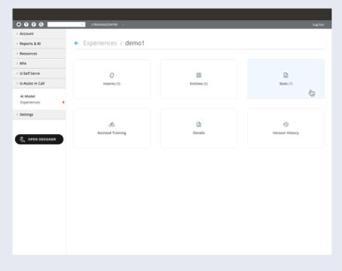
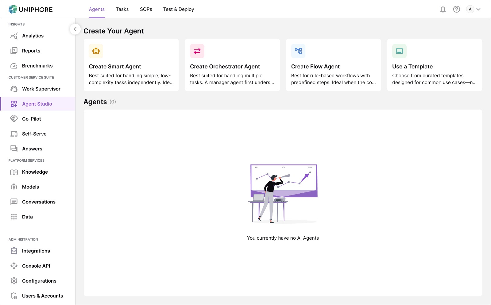
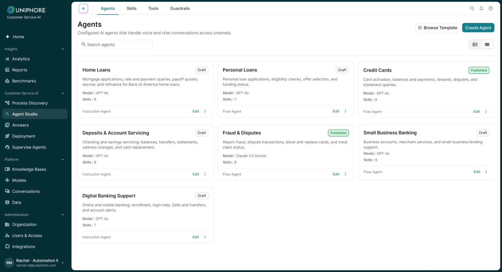
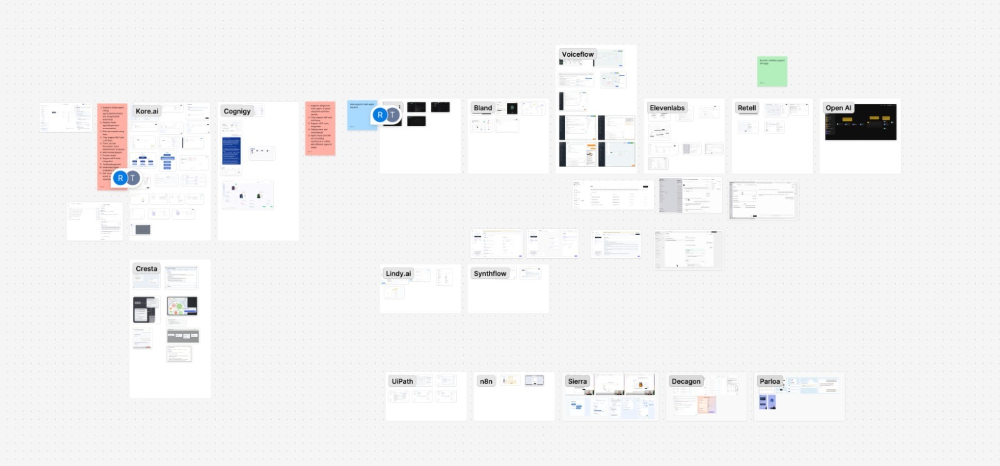
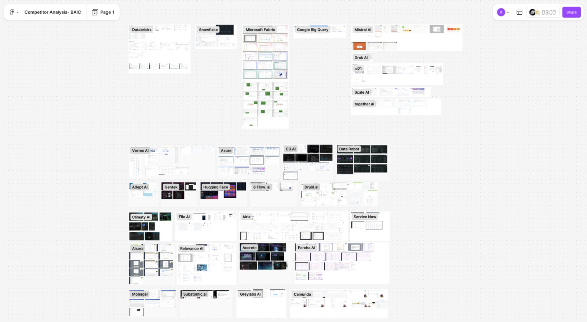
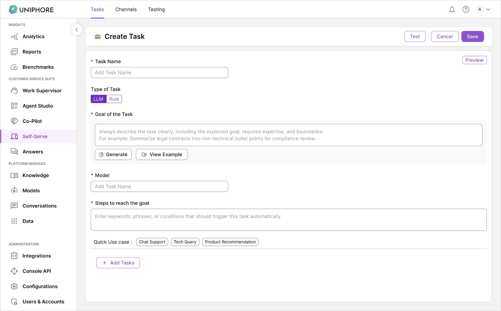
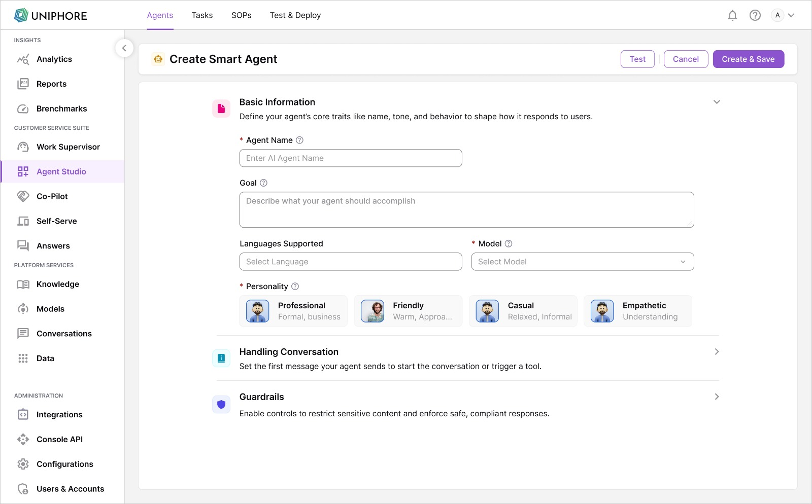

How I worked across platform migration, rule-based conversational AI, LLM-powered agents, and the systems needed to make enterprise AI manageable.



Platform background
Uniphore's contact-center capabilities had grown across multiple products and product environments. Self-service, agent assistance, conversation capture and analytics were all part of the same customer ecosystem, but had evolved through different product experiences.
The broader goal was to bring these capabilities onto a common platform foundation.
The products were connected by purpose,
not by experience.
As the ecosystem grew, users had to work across products that had evolved independently. Navigation, terminology, configuration patterns and administrative workflows were not always consistent.
A task that felt related from a customer's perspective could require understanding a different structure, interaction model or configuration approach depending on where it lived.
Unification wasn't just moving screens.
It meant deciding what should stay, change, or be redesigned.
Discovery & audit
A platform migration couldn't begin with new screens.
I mapped capabilities from the existing products against the new platform to understand what already existed, what needed to move, what required review, where gaps existed, and what should be redesigned.
The mapping became a working reference between the existing experience and the evolving platform.
We weren't migrating screens.
We were migrating capabilities.
Competitive research
The internal audit told me what the platform needed to preserve.
I also contributed to competitive research across AI, ML and enterprise platforms to understand how other complex products handled configuration, workflows, administration, data and emerging AI experiences.
The goal wasn't to copy individual interfaces. It was to understand recurring patterns — and where complex platforms repeatedly became difficult to use.


Research gave us patterns.
Migration gave us constraints.
The design work sat between the two: creating a more coherent platform experience while preserving the capabilities existing customers already depended on.
Rule-based foundation
Before the newer generation of AI Agents, Self-Serve already supported conversational automation using a more explicit NLU and rule-based model.
Users defined what the system should recognize and how it should respond through intents, training phrases, entities, rules and flows.
As these capabilities moved into the newer platform, the experience changed — but many of the underlying concepts initially remained familiar.

The platform had changed.
The intelligence model hadn't — yet.
Mechanics
A rule-based Agent relied on explicit definitions.
The designer or builder taught the system what a user might say, what information to extract, and what should happen next.
Strengths
For structured enterprise processes, explicit rules provided something valuable: predictability.
Teams could define exactly what should happen, control branching behaviour, validate inputs and design fallbacks for known scenarios.
For repeatable or compliance-sensitive workflows, that control mattered.
Scaling limits
As use cases became broader, builders had to account for more ways users might express the same need.
More variations could mean more training phrases, intents, entities, rules, branches and fallback conditions to maintain.
More conversational freedom
→ more configuration to anticipate it.
Flow builder
As workflows grew, the challenge wasn't simply providing nodes and connectors.
Builders needed to understand where they were in a flow, how branches connected, what happened when something failed, and how increasingly complex automation could remain understandable.
I explored multiple Flow Builder approaches while studying how other workflow and automation products handled similar complexity.
The LLM shift
LLMs changed the relationship between the builder and the system.
Instead of defining every possible utterance and explicitly mapping every conversational path, builders could increasingly describe what an Agent should accomplish, give it instructions and knowledge, connect capabilities, and define boundaries.
Teach what to recognize
→ describe what to achieve.
Mental model
Not only configuration —
but controlled autonomy.
Hybrid model
LLM reasoning didn't eliminate the value of deterministic workflows.
Some tasks benefit from flexibility and contextual reasoning. Others require precise sequences, validation and predictable outcomes.
That led naturally toward a hybrid model.
The question wasn't “LLM or rules?”
It was where autonomy was useful — and where predictability was necessary.
Agent lifecycle
Building an Agent was no longer the whole problem.
Enterprise teams also needed ways to ground behaviour, evaluate it, manage changes, deploy safely, understand production behaviour and continuously improve it.
The Agent experience was becoming a lifecycle.
This is an evolving lifecycle — not necessarily capabilities introduced in a single release.
Process discovery
One evolution was moving the starting point closer to actual customer behaviour.
Instead of always beginning with a blank configuration, existing conversations could help identify recurring work and potential automation opportunities.

Testing evolution
With NLU systems, testing often centred around recognition: “Did the system detect the correct intent and extract the expected entities?”
With more autonomous Agents, that wasn't enough.
Testing increasingly needed to evaluate whether the Agent understood the task, followed its instructions, used the right knowledge or tools, respected its boundaries and achieved the expected outcome.
From “Did it understand me?”
to “Did it do the right thing?”
Versioning
When Agent behaviour depends on instructions, knowledge, tools, flows and model behaviour, even small changes can affect outcomes.
Version history therefore wasn't simply a technical record. It became part of making AI behaviour manageable.
AI behaviour needed to be changeable
without becoming untraceable.
Administration
More capable Agents introduced another question: who is allowed to do what?
Agent creation, configuration, publishing and platform administration couldn't be treated as unrestricted actions.
My platform work also covered users, roles, permissions, account configuration and administrative experiences that supported this broader ecosystem.
Platform context
The broader platform continued to evolve toward BAIC / BAIS and more unified, composable AI experiences.
That introduced shared foundations around Agents, models, knowledge, data, governance and enterprise administration, while the product experience increasingly moved toward common navigation and reusable platform patterns.
For my work, this meant that AI Agents were no longer an isolated builder. They were becoming part of a larger enterprise AI ecosystem.
The current workspace
The newer experience brought more of the Agent lifecycle into a connected workspace.
Users could discover or create Agents, configure behaviour, connect skills and tools, define guardrails, test outcomes, manage versions and move toward deployment and supervision.
Implementation & DQA
As experiences moved into development, I reviewed implementation against the intended UX, documented gaps, tracked missing states and clarified behaviour with engineering and product teams.
The DQA process helped identify issues across flows, navigation, components, empty states, permissions and interaction behaviour before considering the experience complete.
Contribution
Broader impact
This work contributed to a broader transition from fragmented conversational-AI capabilities toward a more unified enterprise platform and increasingly capable AI Agent experiences.
The platform foundation reduced the need to treat related capabilities as completely separate products, while the evolving Agent model allowed teams to move from explicitly configuring conversational behaviour toward defining objectives, knowledge, capabilities and boundaries.
Looking back
The role of the interface changed with the role of the AI.